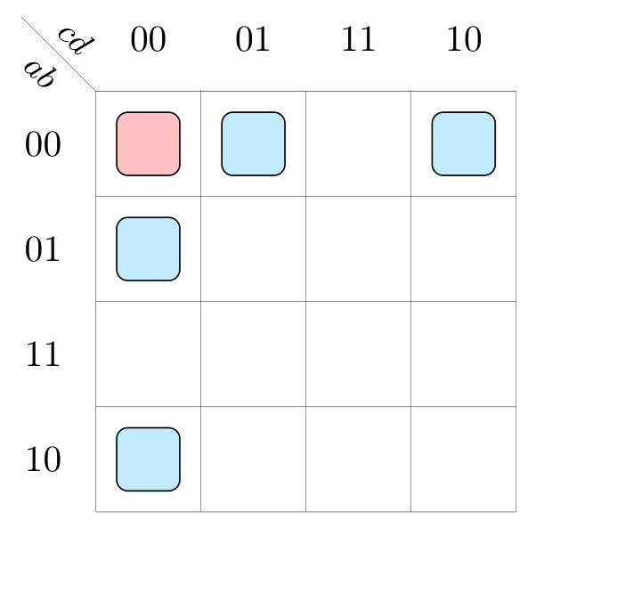
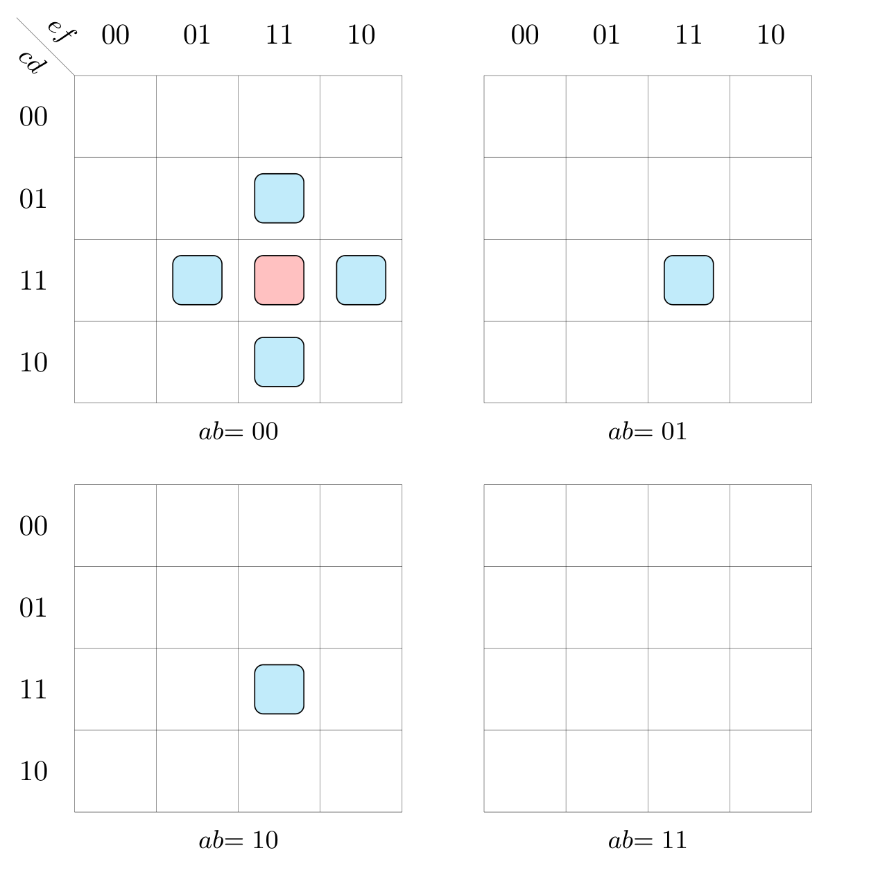
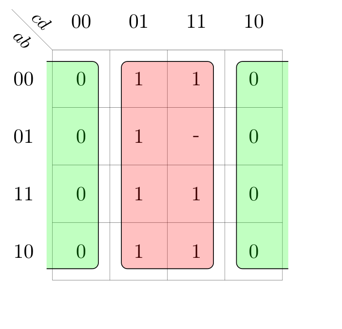
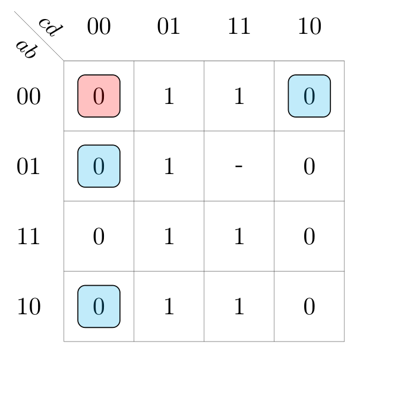
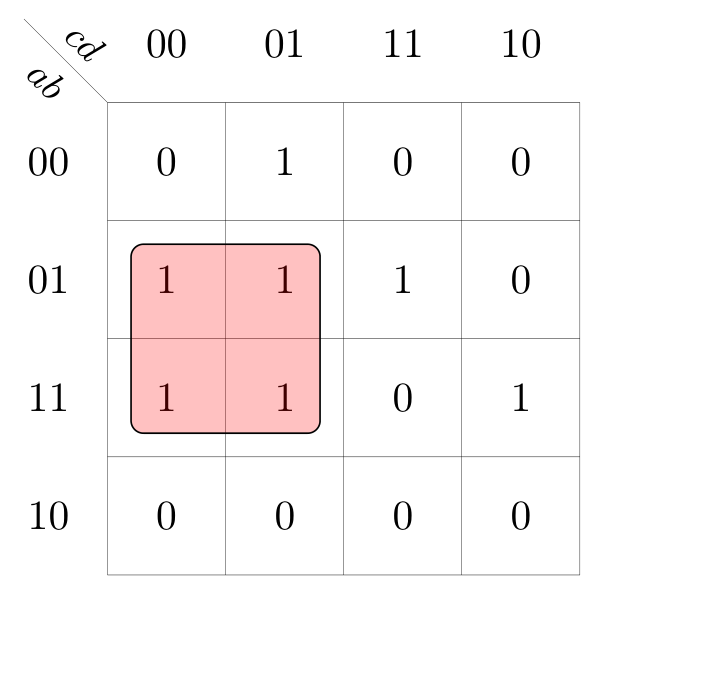
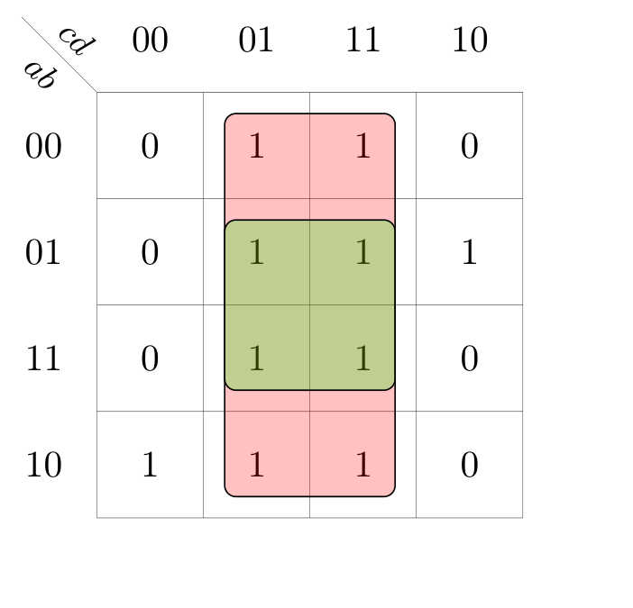
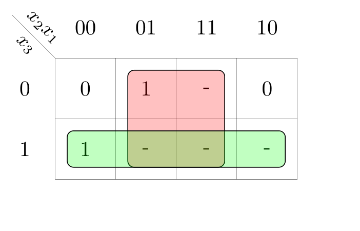
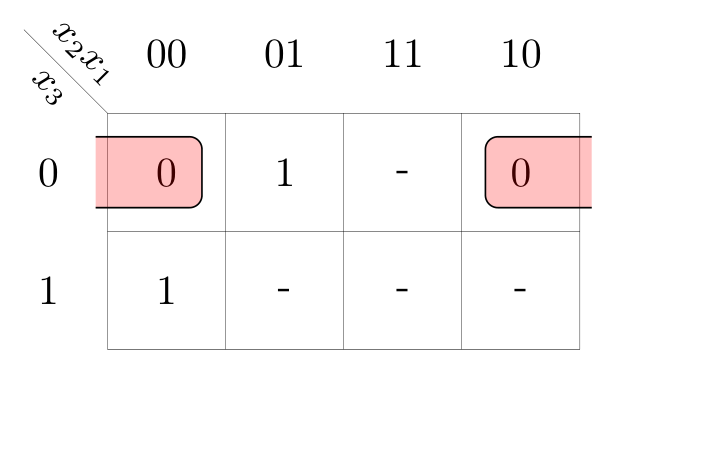
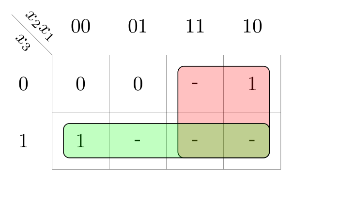
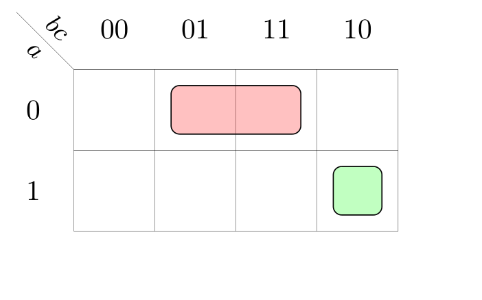

Definizione - Mappa di Karnaugh
La mappa di Karnaugh è la rappresentazione bidimensionale della tabella della verità di una funzione fino a quattro variabili. Le possibili configurazioni sono elencate ai bordi utilizzando il codice di Gray, che permette di avere configurazioni consecutive che differiscono per un solo bit.
Le mappe permettono di identificare graficamente configurazioni adiacenti con lo stesso valore di uscita (cosa utile per trovare poi implicanti e implicati primi essenziali).
Le mappe permettono di identificare graficamente configurazioni adiacenti con lo stesso valore di uscita (cosa utile per trovare poi implicanti e implicati primi essenziali).
Osservazioni personali - Ad esempio
La tabella della verità
è rappresentata dalla seguente mappa di Karnaugh
Definizione - Celle adiacenti su mappe di Karnaugh
In una mappa che descrive una funzione di \( n\) variabili si ha che ogni cella ha \( n\) celle adiacenti. Ogni cella è adiacente a tutte le celle le cui coordinate differiscono di un solo bit.
Graficamente si hanno le seguenti regole:
Graficamente si hanno le seguenti regole:
- sono adiacenti le celle aventi un lato in comune, ovvero
- sono adiacenti le celle poste all'estremità di una stessa riga o colonna, ovvero
- quando si hanno più variabili, sono adiacenti le celle che occupano la stessa posizione nelle sotto-mappe adiacenti, ovvero
Definizione - Raggruppamento rettangolare
In una mappa di Karnaugh, un raggruppamento rettangolare di ordine \( p\) è un insieme di \( 2^{p}\) celle (il cui valore è uguale o è indifferenza) che hanno \( p\) celle adiacenti dello stesso valore (o indifferenza).
Osservazioni personali - Ad esempio
Considerando la seguente mappa  sono evidenziati due raggruppamenti di \( 8\) celle (ovvero di ordine \( 3\)) e si ha che ogni cella ha almeno \( 3\) celle adiacenti dello stesso valore.
sono evidenziati due raggruppamenti di \( 8\) celle (ovvero di ordine \( 3\)) e si ha che ogni cella ha almeno \( 3\) celle adiacenti dello stesso valore.
Ad esempio, nel caso della cella \( 0000\)
Ad esempio, nel caso della cella \( 0000\)

Definizione - Raggruppamenti rettangolari ed implicanti
Considerando un raggruppamento di ordine \( p\) le cui celle hanno valore \( 1\), esso individua un implicante della funzione. In particolare, si avrà un prodotto di \( (n - p)\) variabili (ovvero le celle le cui coordinate rimangono uguali per tutte le celle del raggruppamento) in forma vera se valgono \( 1\) ed in forma negata se valgono \( 0\).
Inoltre ogni raggruppamento che non è incluso in un altro raggruppamento di ordine superiore, è un implicante primo.
Inoltre ogni raggruppamento che non è incluso in un altro raggruppamento di ordine superiore, è un implicante primo.
Osservazioni personali - Ad esempio
Considerando la seguente mappa si ha che il raggruppamento evidenziato rappresenta un implicante, in particolare si ha che:

- la variabile \( a\) varia;
- la variabile \( b\) rimane costante (ed ha valore \( 1\));
- la variabile \( c\) rimane costante (ed ha valore \( 0\));
- la variabile \( d\) varia.
Definizione - Raggruppamenti rettangolari ed implicati
Considerando un raggruppamento di ordine \( p\) le cui celle hanno valore \( 0\), esso individua un implicato della funzione. In particolare, si avrà una somma di \( (n - p)\) variabili (ovvero le celle le cui coordinate rimangono uguali per tutte le celle del raggruppamento) in forma vera se valgono \( 0\) ed in forma negata se valgono \( 1\).
Inoltre ogni raggruppamento che non è incluso in un altro raggruppamento di ordine superiore, è un implicato primo.
Inoltre ogni raggruppamento che non è incluso in un altro raggruppamento di ordine superiore, è un implicato primo.
Osservazioni personali - Ad esempio
Considerando la seguente mappa si hanno due raggruppamenti evidenziati: il più piccolo è un raggruppamento di ordine \( 2\) mentre il più grande è di ordine \( 3\). Si ha quindi il minore non è un implicato primo, in quanto si ha che è contenuto in un raggruppamento più grande.
Considerando quindi il raggruppamento più grande si ha che:

Considerando quindi il raggruppamento più grande si ha che:
- la variabile \( a\) varia;
- la variabile \( b\) varia;
- la variabile \( c\) varia;
- la variabile \( d\) rimane costante (ed ha valore \( 1\)).
Definizione - Copertura di una funzione su una mappa
La copertura di una funzione su una mappa è l'insieme di raggruppamenti rettangolari composto dall'unione di tutte le celle contenenti valore \( 1\) o indifferenza (nel caso di "copertura degli uni") e \( 0\) o indifferenza (nel caso di "copertura degli zeri").
Ogni copertura fornisce una possibile espressione (SP nel caso di copertura degli uni, PS nel caso di copertura degli zeri).
Tra tutte le possibili coperture si possono individuare le coperture minime, ovvero quella composta dal minor numero possibile di raggruppamenti di dimensione massima.
Ogni copertura fornisce una possibile espressione (SP nel caso di copertura degli uni, PS nel caso di copertura degli zeri).
Tra tutte le possibili coperture si possono individuare le coperture minime, ovvero quella composta dal minor numero possibile di raggruppamenti di dimensione massima.
Osservazioni personali - Ad esempio
Considerando la seguente mappa È possibile individuare due raggruppamenti: corrispondenti agli implicati \( (c)\) e \( (a' + c' + d)\) (ovvero all'espressione \( (c \cdot (a' + c' + d))\)): non è tuttavia la copertura minima, in quanto lo è la seguente corrispondente agli implicati \( (c)\) e \( (a' + d)\) (ovvero all'espressione \( c \cdot (a' + d)\)).



Definizione - Raggruppamenti e termini ridondanti
Un raggruppamento di dimensione massima le cui celle sono tutte incluse in altri raggruppamenti è un implicato primo non essenziale: non è quindi "utilizzabile" per ottenere la copertura minima.
Definizione - Individuare la copertura minima
Nonostante non esista un preciso algoritmo per l'individuazione della copertura minima, è però possibile delineare una serie di passi utili a questo scopo.
- per prima cosa, si sceglie che tipo di espressione cercare (SP o PS);
- si individuano i raggruppamenti rettangolari di dimensione maggiore: nel caso una stessa cella sia compresa in più di un raggruppamento, la si tiene in considerazione per il passo successivo;
- si raggruppano al meglio le celle rimanenti, tenendo conto anche di raggruppare la stessa cella con più di raggruppamenti (evitando però di creare raggruppamenti inutili).
Esempio - Sintesi minima di un encoder
Si vuole ottenere l'espressione minima dell'encoder, ovvero una rete logica che converte il codice \( 1\) su \( N\) in un numero binario a due cifre.
In particolare, tale rete ha la seguente tabella della verità: Abbiamo quindi:
Abbiamo quindi:
In particolare, tale rete ha la seguente tabella della verità:
- la mappa relativa all'uscita \( z_{0}\)Per ottenere l'espressione SP consideriamo i seguenti raggruppamenti
 equivalenti all'espressione \( (x_{1} + x_{3})\).
equivalenti all'espressione \( (x_{1} + x_{3})\).
L'espressione PS sarà invece data dai seguenti raggruppamentila cui espressione equivalente è \( (x_{1} + x_{3})\), che è esattamente l'espressione minima del caso SP.
- la mappa relativa all'uscita \( z_{1}\)Per ottenere l'espressione SP consideriamo i seguenti raggruppamentiequivalenti all'espressione \( (x_{2} + x_{3})\).
L'espressione PS sarà invece data dai seguenti raggruppamentila cui espressione equivalente è \( (x_{2} + x_{3})\), che è esattamente l'espressione minima del caso SP.
Definizione - Analisi con le mappe di Karnaugh
Se fino ad ora si sono utilizzate le mappe per effettuare la sintesi di una rete (da tabella della verità a espressione minima), è possibile utilizzarle anche per effettuare l'analisi (da espressione o schema logico a tabella della verità):
- data l'espressione (o dedotta dallo schema logico) la si deve trasformare in una somma di prodotti (ovvero un'espressione SP) o in un prodotto di somme (ovvero un'espressione PS);
- si disegna a questo punto una mappa vuota delle giuste dimensioni (ovvero per \( n\) ingressi, una mappa di \( 2^{n}\) celle);
- per ogni termine (mintermine nel caso SP, maxtermine nel caso PS) si disegna il raggruppamento corrispondente;
- si inseriscono gli \( 1\) (nel caso siano mintermini) e gli \( 0\) (nel caso siano maxtermini) nelle celle che fanno parte di almeno un raggruppamento, mentre si inserisce il valore non scelto nelle altre;
- si trasforma la mappa in una tabella della verità.
Esempio - Analisi con le mappe di Karnaugh
Considerando la seguente rete logica  si vuole effettuare l'analisi.
si vuole effettuare l'analisi.
Per farlo deduciamo l'espressione dallo schema logico:
Utilizziamo la prima legge di De Morgan (\( (a \cdot b)' = a' + b'\)) e otteniamo la seguente espressione \[ (a + c') \cdot (a' + b' + c) \cdot (b) \cdot (c) \] che è una forma PS.
Disegniamo ora una mappa di Karnaugh sufficientemente grande: dato che abbiamo \( 3\) ingressi, sarà una mappa di \( 8\) celle, ovvero Consideriamo quindi il primo raggruppamento descritto dal maxtermine \( a + c'\): dobbiamo quindi cercare le celle in cui l'ingresso \( a\) è uguale a \( 0\) mentre l'ingresso \( c\) è uguale a \( 1\) (in quanto è negato). Avremo quindi Con lo stesso ragionamento, disegnamo il raggruppamento descritto da \( (a' + b' + c)\), ovvero
Consideriamo quindi il primo raggruppamento descritto dal maxtermine \( a + c'\): dobbiamo quindi cercare le celle in cui l'ingresso \( a\) è uguale a \( 0\) mentre l'ingresso \( c\) è uguale a \( 1\) (in quanto è negato). Avremo quindi Con lo stesso ragionamento, disegnamo il raggruppamento descritto da \( (a' + b' + c)\), ovvero  e i raggruppamenti descritti da \( (b)\) e \( (c)\), ovvero
e i raggruppamenti descritti da \( (b)\) e \( (c)\), ovvero  che è equivalente alla seguente tabella della verità
che è equivalente alla seguente tabella della verità
Per farlo deduciamo l'espressione dallo schema logico:
- innanzitutto, si può notare che il gate finale è un AND a quattro ingressi, equivalente all'espressione \[ (\ldots) \cdot (\ldots) \cdot (\ldots) \cdot (\ldots) \]
- nel primo ingresso vi è un OR a due ingressi, di cui uno è negato (ovvero \( (a + c')\)), da cui \[ (a + c') \cdot (\ldots) \cdot (\ldots) \cdot (\ldots) \]
- nel secondo vi è un OR a due ingressi, di cui uno è direttamente collegato a \( c\) e l'altro è un AND in serie ad un NOT con ingressi \( a\) e \( b\), ovvero, equivalente all'espressione \( ((a \cdot b)' + c)\), da cui \[ (a + c') \cdot ((a \cdot b)' + c) \cdot (\ldots) \cdot (\ldots) \]
- il terzo ingresso è collegato direttamente a \( b\) mentre il quarto a \( c\), da cui si può ottenere l'espressione definitiva \[ (a + c') \cdot ((a \cdot b)' + c) \cdot (b) \cdot (c) \]
Utilizziamo la prima legge di De Morgan (\( (a \cdot b)' = a' + b'\)) e otteniamo la seguente espressione \[ (a + c') \cdot (a' + b' + c) \cdot (b) \cdot (c) \] che è una forma PS.
Disegniamo ora una mappa di Karnaugh sufficientemente grande: dato che abbiamo \( 3\) ingressi, sarà una mappa di \( 8\) celle, ovvero

Inseriamo quindi i valori nelle celle comprese nei raggruppamenti (in questo caso \( 0\) dato che abbiamo considerato i maxtermini) e otteniamo la seguente mappa
